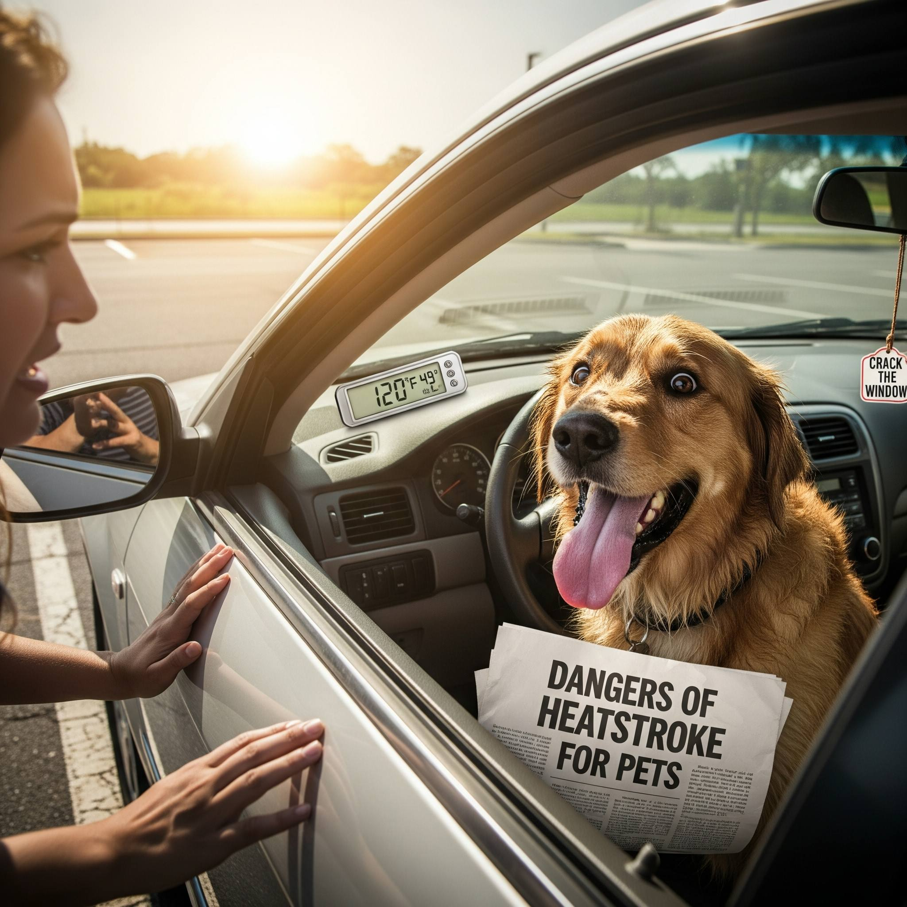
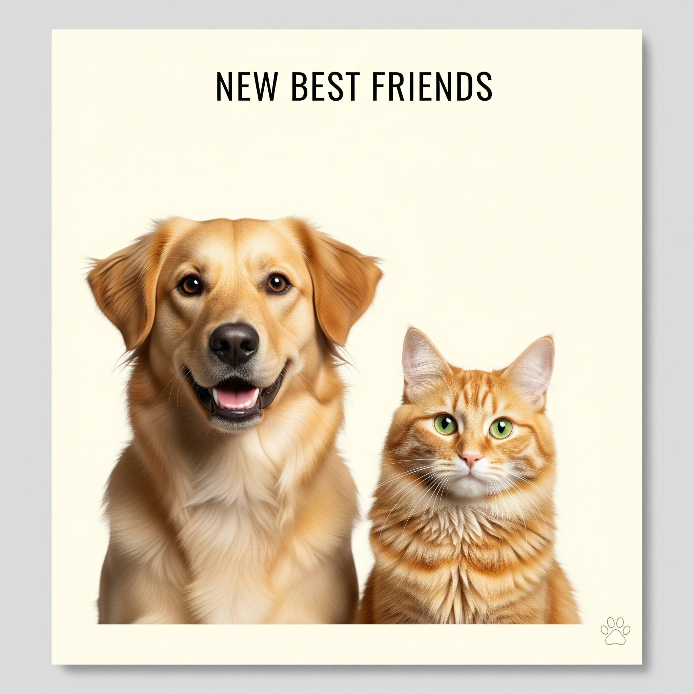
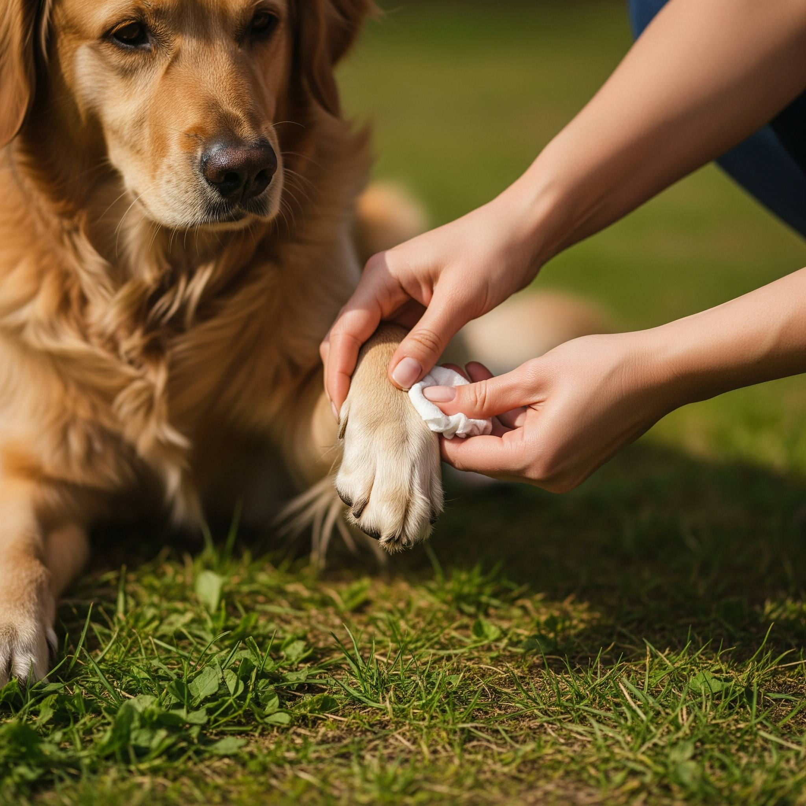
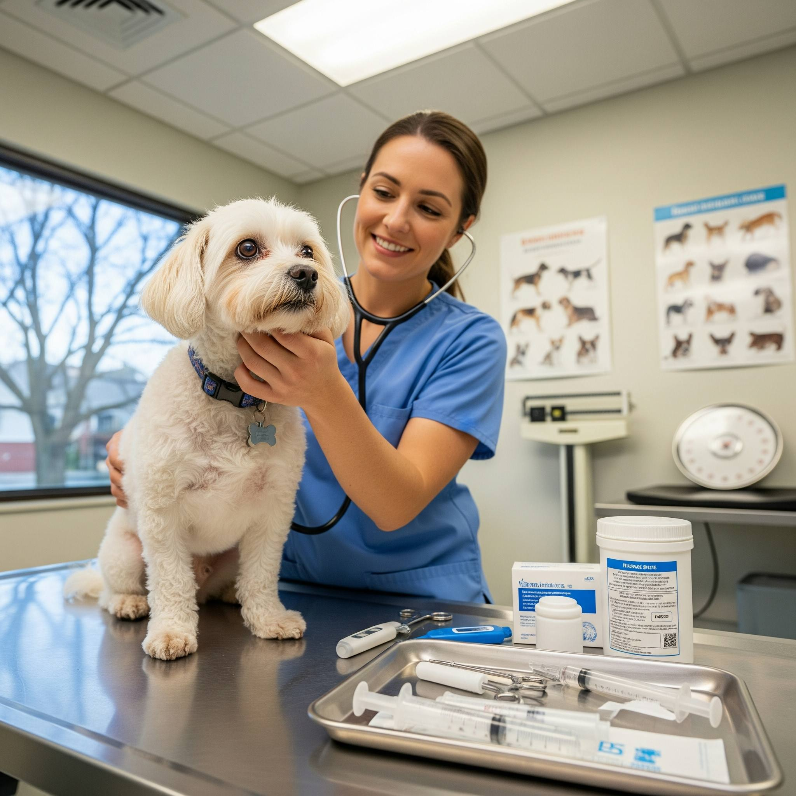
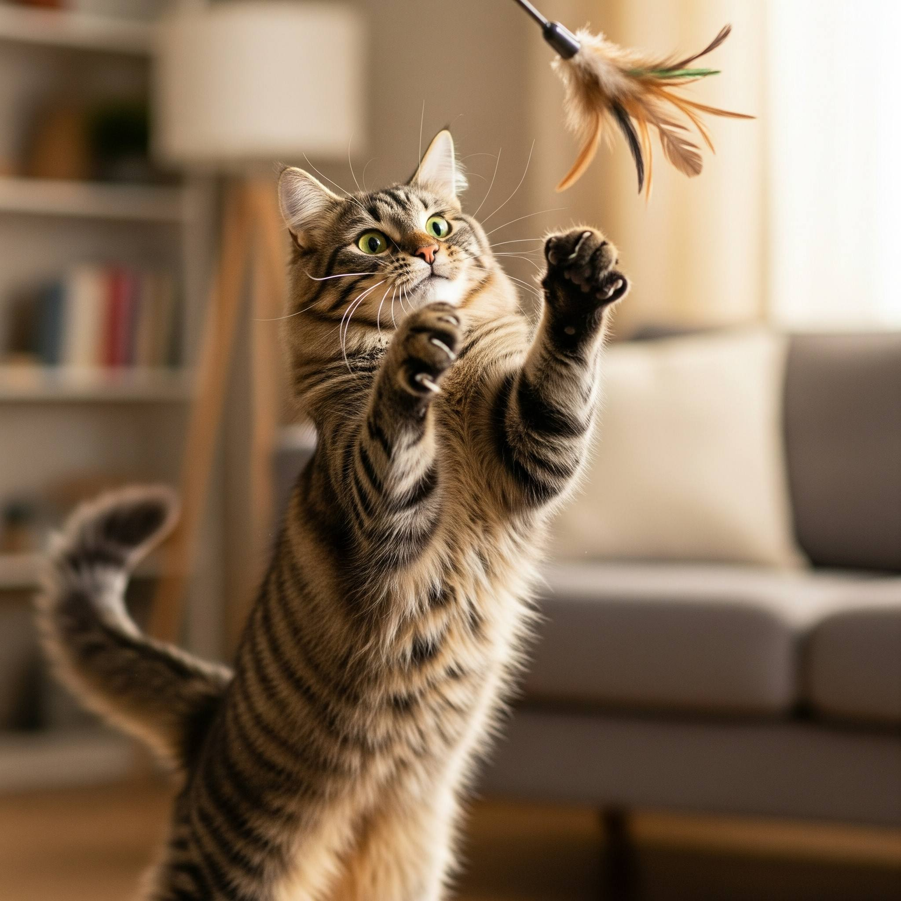
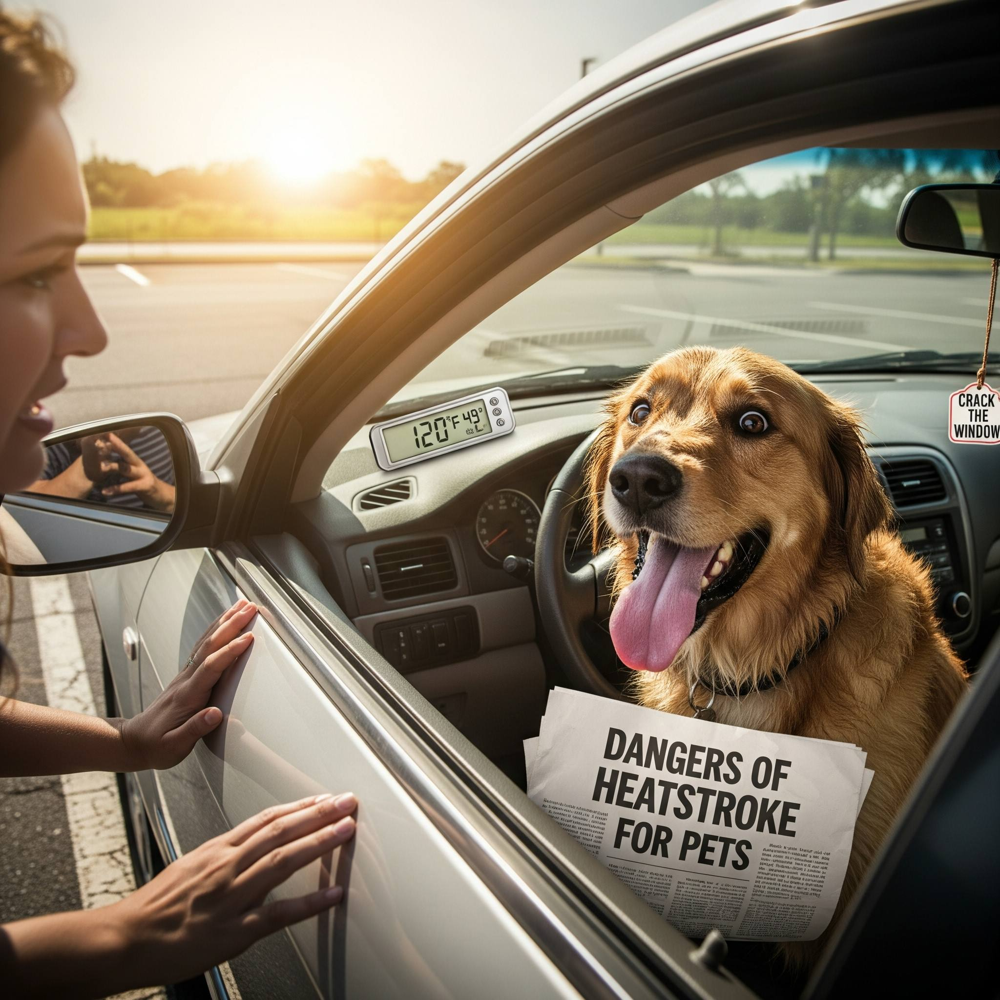
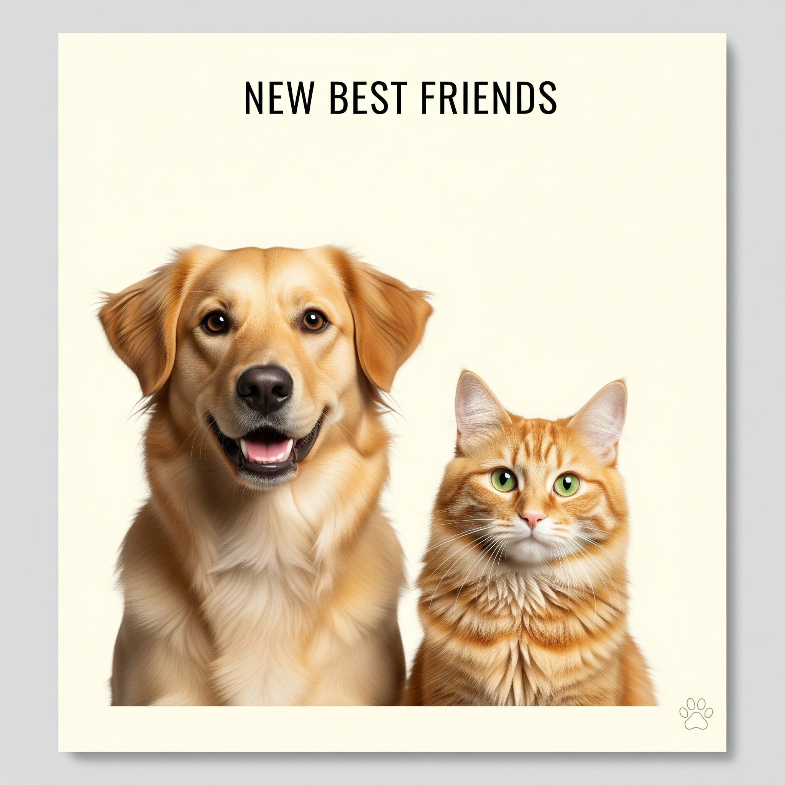
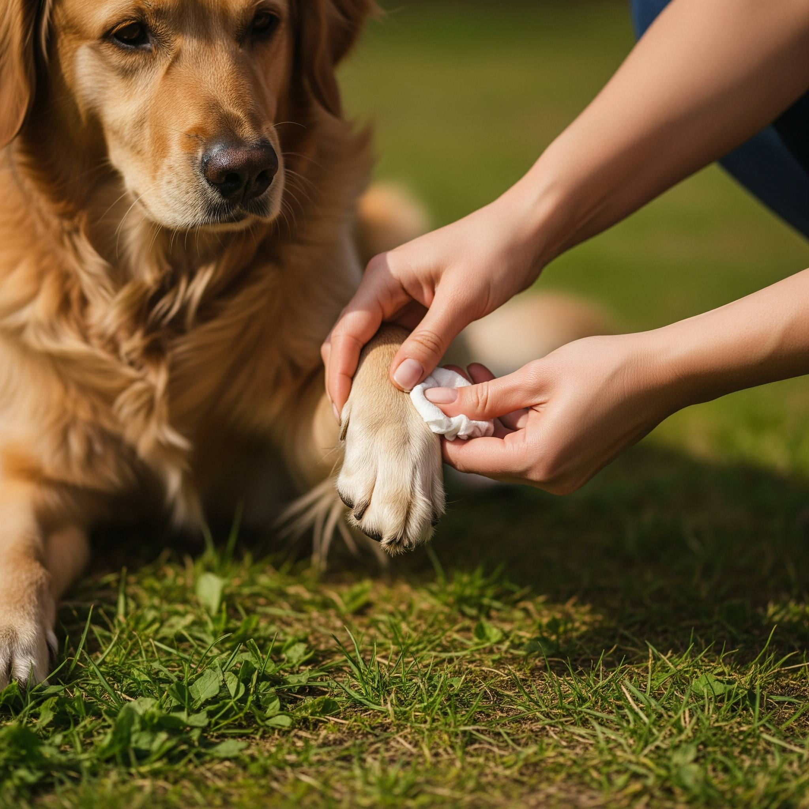
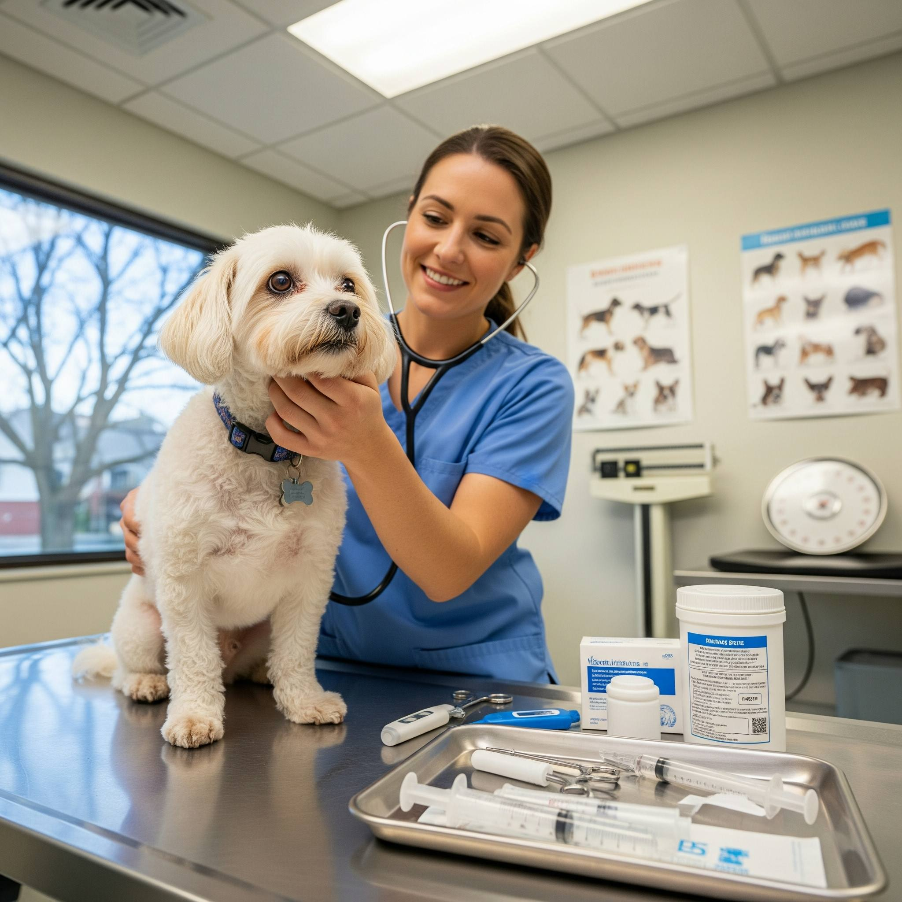
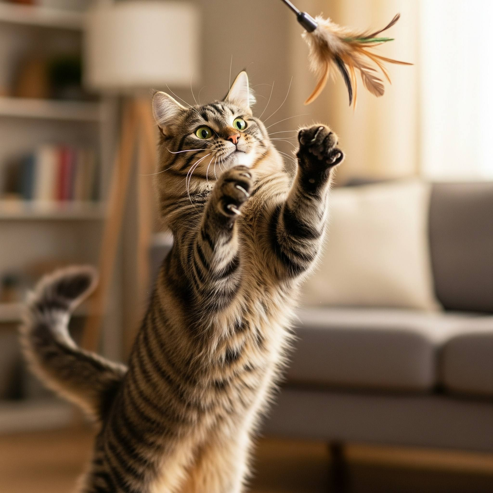

- Intensive Care For Life Threatening Disease
- Fully Equipped Operation Theatre For Soft Tissue & Orthopaedic & Spinal Surgeries
- Ultrasonic Dental Scaling
- ECG/Echocardiograph
- Ultrasound with Color Doppler
- Automated Blood Tests
- Hi-Tech Microscope for Diagnosis of Blood Protozoan Disease
- Digital X-Rays
- Assisted Reproduction
- Treatment / Vaccination
- 24 Hours Emergency Services
Vikas Puri Centre
Contact Address
56 & 58, 1st Floor, DDA Local Shopping Centre Block - J,
Vikas Puri, New Delhi - 110 018.
56 & 58, 1st Floor, DDA Local Shopping Centre Block - J,
Vikas Puri, New Delhi - 110 018.
Contact Numbers
011 - 28543773 / 49120170
011 - 28543773 / 49120170


 








